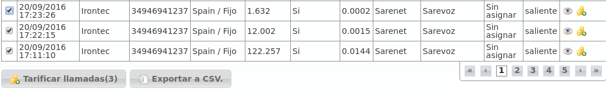

Tarificación de llamadas¶
Tarificar una llamada es la acción de poner precio a una llamada que implica coste.
Tarificación automática¶
Tal y como se ha explicado con anterioridad, el proceso de tarificación es automático:
En el momento en el que una llamada se va a establecer, se verifica que se vaya a poder tarificar.
Si no se va a poder tarificar atendiendo a los planes de precios activos para la empresa, la llamada no se cursará.
En el momento en el que una llamada que implique coste se cuelga, aparece en el listado de Llamadas facturables.
Pasados unos minutos, el proceso tarificador evaluará las llamadas tarificables sin coste y rellenará los siguientes campos del registro anterior:
Precio
Plan de precio
Patrón de destino (que es en realidad el patrón de precio)
Tarificado a ‘Sí’
Retarificación manual¶
Puede ocurrir que una llamada se tarifique de forma incorrecta, por múltiples motivos:
Plan de precio importado con una errata.
Múltiples planes de precios con métricas incorrectas.
Plan de precio adicional sin vincular.
- Etc.
Para estos casos, el administrador de marca puede re-tarificar las llamadas que considere mal tarificadas.
Importante
Retarificar una llamada consiste en volver a calcular el precio de la misma. Lógicamente, la retarificación se calculará en el momento solicitado, teniendo en cuenta las configuración actual de planes de precio y no las del momento del establecimiento de la llamada).
Para retarificar, basta con seleccionar las llamadas en Configuración de Marca > Llamada facturables y presionar el botón Tarificar llamadas:
Error
No se puede retarificar una llamada que esté incluida en una factura. Es decir, si la llamada seleccionada tiene el campo Factura con valor, habrá que borrar esta factura previamente. El motivo es estar seguros que no existen facturas con llamadas mal tarificadas: si retarificas una llamada, regeneras la factura que la contiene.